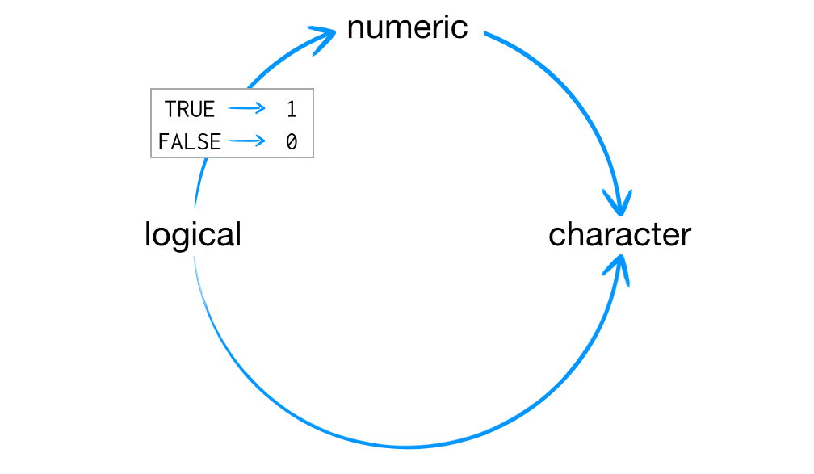
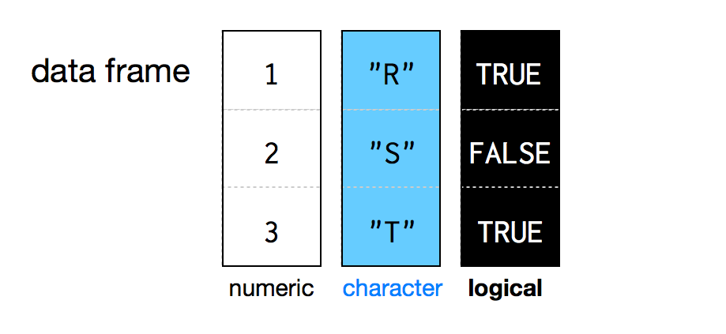
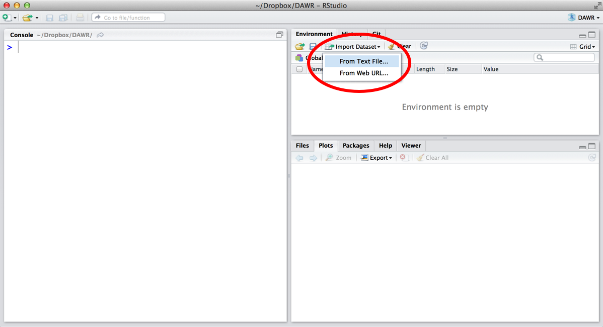
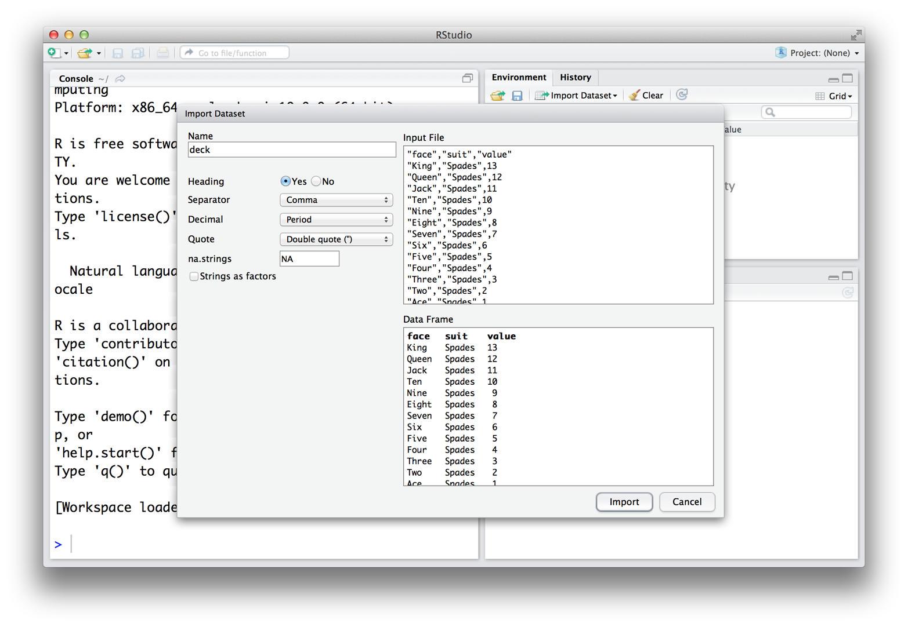
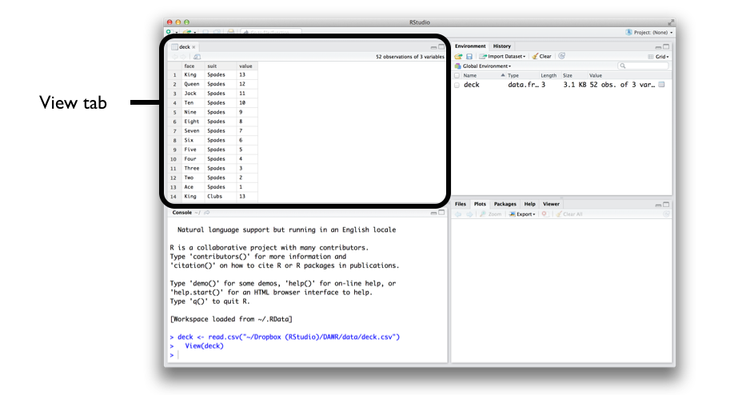
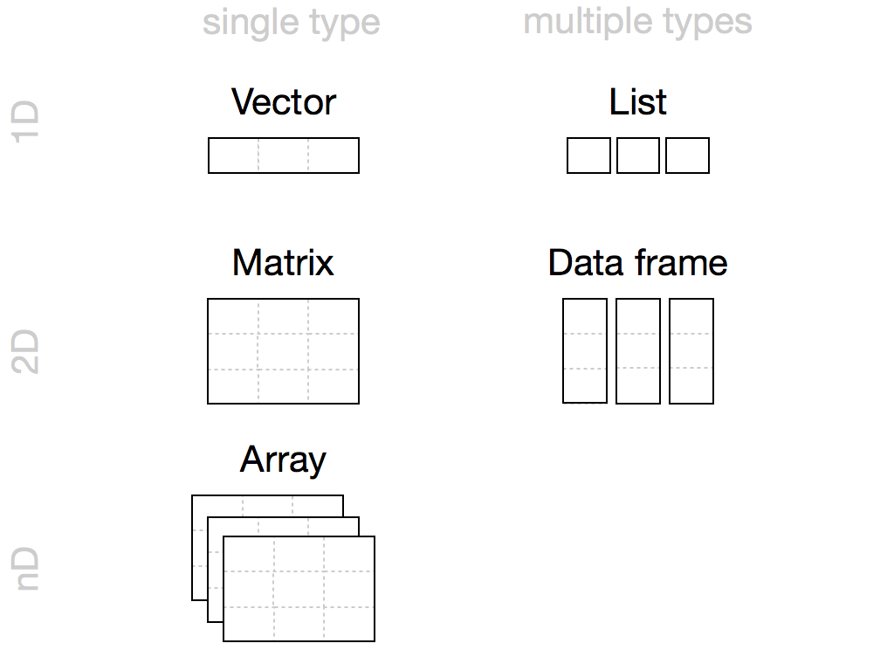

4 Rオブジェクト
この章では、Rを使用して52枚のトランプのデッキ（山札）を組み立てます。
まず、トランプのカードを表す単純なRオブジェクトを作成することから始め、最終的には完全なデータ表を作成するところまで進めます。一言で言えば、Excelのスプレッドシートに相当するものをゼロから構築します。完成すると、カードのデッキは次のようになります。
face suit value
king spades 13
queen spades 12
jack spades 11
ten spades 10
nine spades 9
eight spades 8
...Rでデータセットを使用するために、常にゼロから構築する必要があるのでしょうか？決してそんなことはありません。ほとんどのデータセットは、 Section 4.9 で説明するように、簡単な手順でRに読み込むことができます。しかし、この演習では、Rがどのようにデータを保存し、どのように独自のデータセットを組み立てたり分解したりできるのかを学びます。また、Rで使用できるさまざまな種類のオブジェクトについても学びます（すべてのRオブジェクトが同じわけではありません！）。この演習は「通過儀礼」だと考えてください。これをやり遂げることで、あなたはRでのデータ保存のエキスパートになれるでしょう。
まずは基本中の基本から始めます。Rで最も単純な種類のオブジェクトはアトミックベクトル（Atomic Vector）です。アトミックベクトルは原子力（Atomic）で動くわけではありませんが、非常に単純で、どこにでも登場します。よく観察すれば、Rのほとんどの構造がアトミックベクトルから構築されていることがわかるでしょう。
4.1 アトミックベクトル（Atomic Vectors）
アトミックベクトルは、単なるデータの単純なベクトルです。実際、あなたはすでに ?sec-project1で die オブジェクトというアトミックベクトルを作成しています。c 関数を使っていくつかのデータの値をグループ化することで、アトミックベクトルを作成できます。
die <- c(1, 2, 3, 4, 5, 6)
die
## 1 2 3 4 5 6
is.vector(die)
## TRUE
Noteis.vector
is.vector は、オブジェクトがアトミックベクトルであるかどうかをテストします。オブジェクトがアトミックベクトルの場合は TRUE を、そうでない場合は FALSE を返します。
また、1つの値だけでアトミックベクトルを作成することもできます。Rは単一の値を長さ1のアトミックベクトルとして保存します。
five <- 5
five
## 5
is.vector(five)
## TRUE
length(five)
## 1
length(die)
## 6
Notelength
length はアトミックベクトルの長さを返します。
各アトミックベクトルはその値を一次元ベクトルとして保存し、1つのアトミックベクトルには1つの型のデータしか保存できません。Rでは、異なる種類のアトミックベクトルを使用することで、異なる型のデータを保存できます。Rは合計で、倍精度実数型（Doubles）、整数型（Integers）、文字列型（Characters）、論理値型（Logicals）、複素数型（Complex）、**ロウ型（Raw）**の6つの基本タイプのアトミックベクトルを認識します。
カードデッキを作成するには、異なる種類の情報（テキストと数値）を保存するために、異なるタイプのアトミックベクトルを使用する必要があります。これは、データを入力する際にいくつかの簡単な規則に従うことで実現できます。例えば、入力に大文字の L を含めることで整数ベクトルを作成できます。また、入力を引用符で囲むことで文字列ベクトルを作成できます。
int <- 1L
text <- "ace"各タイプのアトミックベクトルには、それぞれ固有の規則（後述）があります。Rはその規則を認識し、適切なタイプのアトミックベクトルを作成します。2つ以上の要素を持つアトミックベクトルを作成したい場合は、パッケージとヘルプページで学んだ c 関数を使って要素を組み合わせることができます。各要素に同じ規則を適用してください。
int <- c(1L, 5L)
text <- c("ace", "hearts")なぜRが複数のタイプのベクトルを使用するのか疑問に思うかもしれません。ベクトルのタイプは、Rがあなたの期待通りに振る舞うのを助けます。例えば、Rは数値を含むアトミックベクトルでは計算を行いますが、文字列を含むアトミックベクトルでは行いません。
sum(int)
## 6
sum(text)
## Error in sum(text) : invalid 'type' (character) of argumentしかし、話が先走ってしまいました。Rにおける6つのタイプのアトミックベクトルを見ていきましょう。
4.1.1 倍精度実数型（Doubles）
倍精度実数型（Double）ベクトルは、通常の数値を保存します。数値は正または負、巨大または微小、小数点の右側に数字があるかないかを問いません。一般的に、Rに入力した数値はすべて倍精度実数として保存されます。例えば、プロジェクト1：重み付けされたサイコロで作ったサイコロは、倍精度実数のオブジェクトでした。
die <- c(1, 2, 3, 4, 5, 6)
die
## 1 2 3 4 5 6通常はRでどのタイプのオブジェクトを扱っているか（見れば明らかですが）わかりますが、typeof を使ってRにオブジェクトのタイプを尋ねることもできます。
typeof(die)
## "double"一部のR関数では倍精度実数を「数値型（numeric）」と呼ぶことがあり、私もそう呼ぶことがよくあります。「Double」はコンピュータサイエンスの用語です。これは、コンピュータが数値を保存するために使用する特定のバイト数を指しますが、データサイエンスを行う上では「numeric」の方がはるかに直感的だと感じます。
4.1.2 整数型（Integers）
整数型（Integer）ベクトルは、小数点以下の成分を持たない数値である整数を保存します。データサイエンティストとしては、整数を倍精度実数のオブジェクトとして保存できるため、整数型をそれほど頻繁に使用することはないでしょう。
Rで明示的に整数を作成するには、数値の後に大文字の L を入力します。
int <- c(-1L, 2L, 4L)
int
## -1 2 4
typeof(int)
## "integer"Rは L を含めない限り、数値を整数として保存しません。L のない整数値は倍精度実数として保存されます。4 と 4L の唯一の違いは、Rがコンピュータのメモリ内で数値をどのように保存するかです。整数は（非常に大きい、あるいは非常に小さい場合を除き）倍精度実数よりもコンピュータのメモリ内で正確に定義されます。
なぜ倍精度実数ではなく整数としてデータを保存するのでしょうか？時として、精度の違いが驚くべき効果をもたらすことがあります。コンピュータは、Rプログラム内の各倍精度実数を保存するために64ビットのメモリを割り当てます。これによりかなりの精度が得られますが、一部の数値は64ビット（64個の「1」と「0」のシーケンス）で正確に表現できません。例えば、\(\pi\)（円周率）は小数点以下に無限の数字の羅列を含みます。コンピュータは \(\pi\) をメモリに保存するために、\(\pi\) に近いが完全に等しくはない数値に丸める必要があります。多くの小数も同様の運命を辿ります。
その結果、各倍精度実数は約16桁の有効数字まで正確です。これにより、わずかな誤差が生じます。ほとんどの場合、この丸め誤差（Rounding Error）は気づかれません。しかし、状況によっては、丸め誤差が驚くべき結果を引き起こすことがあります。例えば、以下の式の計算結果はゼロになると期待するかもしれませんが、実際にはそうなりません。
sqrt(2)^2 - 2
## 4.440892e-162の平方根は16桁の有効数字では正確に表現できません。その結果、Rはその量を丸める必要があり、式の結果はゼロに非常に近いが、完全にはゼロではない数値になります。
これらの誤差は**浮動小数点誤差（Floating-point errors）と呼ばれ、このような状況で算術演算を行うことを浮動小数点演算（Floating-point arithmetic）**と呼びます。浮動小数点演算はR特有の機能ではなく、コンピュータプログラミング全般の特徴です。通常、浮動小数点誤差は一日を台無しにするほどではありません。ただ、驚くべき結果の原因になる可能性があることを覚えておいてください。
小数を避け、整数のみを使用することで浮動小数点誤差を回避できます。しかし、ほとんどのデータサイエンスの状況において、これは選択肢になりません。整数だけでは、計算結果を表現するために非整数が必要になる前に、あまり多くの数学的処理ができないからです。幸いなことに、浮動小数点演算によって引き起こされる誤差は通常は重要ではありません（そして重要である場合は、すぐに見分けることができます）。その結果、データサイエンティストとしては一般的に整数の代わりに倍精度実数を使用することになります。
4.1.3 文字列型（Characters）
文字列型（Character）ベクトルは、短いテキストを保存します。Rで文字列ベクトルを作成するには、引用符で囲まれた文字または文字列を入力します。
text <- c("Hello", "World")
text
## "Hello" "World"
typeof(text)
## "character"
typeof("Hello")
## "character"文字列ベクトルの個々の要素は**文字列（Strings）**として知られています。文字列には文字以上のものを含めることができることに注意してください。数値や記号から文字列を組み立てることもできます。
Note練習問題：文字列か数値か？
文字列と数値の違いを見分けることができますか？テストです。1、"1"、"one" のうち、どれが文字列でどれが数値でしょうか？
解答例
"1"と"one"はどちらも文字列です。
文字列には数値の文字を含めることができますが、それによって数値型になるわけではありません。それらはたまたま中に数字が入っているだけの文字列です。文字列は引用符で囲まれているため、本物の数値と区別できます。実際、Rにおいて引用符で囲まれたものはすべて、引用符の間に何が表示されていても文字列として扱われます。
Rのオブジェクトと文字列を混同しがちです。なぜなら、どちらもRコード内ではテキストの断片として現れるからです。例えば、x は「x」という名前のRオブジェクトの名前であり、"x" は文字「x」を含む文字列です。一方は生データを含むオブジェクトであり、他方は生データの断片そのものです。
引用符を忘れると、必ずエラーが発生することを覚悟してください。Rは、おそらく存在しないオブジェクトを探し始めるからです。
4.1.4 論理値型（Logicals）
論理値型（Logical）ベクトルは、TRUE（真）と FALSE（偽）という、Rにおけるブーリアン（Boolean）データを保存します。論理値は比較などを行うのに非常に役立ちます。
3 > 4
## FALSE大文字の TRUE または FALSE（引用符なし）を入力すると、Rは入力を論理データとして扱います。また、Rは T と F が TRUE と FALSE の略記であると仮定します。ただし、これらが他の場所で定義されている場合（例：T <- 500）は除きます。T と F の意味は変更される可能性があるため、TRUE と FALSE を使い続けるのが最善です。
logic <- c(TRUE, FALSE, TRUE)
logic
## TRUE FALSE TRUE
typeof(logic)
## "logical"
typeof(F)
## "logical"4.1.5 複素数型（Complex）とロウ型（Raw）
倍精度実数、整数、文字列、および論理値は、Rで最も一般的なアトミックベクトルのタイプですが、Rはさらに2つのタイプを認識します。複素数型（Complex）とロウ型（Raw）です。データを分析するためにこれらを使用することはまずないと思われますが、網羅性のためにここに挙げておきます。
複素数ベクトルは複素数を保存します。複素数ベクトルを作成するには、数値に i を使って虚数項を加えます。
comp <- c(1 + 1i, 1 + 2i, 1 + 3i)
comp
## 1+1i 1+2i 1+3i
typeof(comp)
## "complex"ロウ（Raw）ベクトルは、データの生バイト（Raw bytes）を保存します。ロウベクトルの作成は複雑になりますが、raw(n) を使うことで長さ n の空のロウベクトルを作成できます。このタイプのデータを扱う際の詳細なオプションについては、raw のヘルプページを参照してください。
raw(3)
## 00 00 00
typeof(raw(3))
## "raw"
Note練習問題：カードのベクトル
ロイヤルフラッシュに含まれるカードの表面の名前（例：スペードのエース、スペードのキング、スペードのクイーン、スペードのジャック、スペードの10）だけを保存するアトミックベクトルを作成してください。スペードのエースの表面の名前は「ace」であり、「spades」はスート（Suit）です。
名前を保存するためにどのタイプのベクトルを使用しますか？
解答例 カードの名前を保存するには、文字列ベクトルが最も適切なアトミックベクトルのタイプです。各名前を引用符で囲めば、
c関数を使って作成できます。
hand <- c("ace", "king", "queen", "jack", "ten")
hand
## "ace" "king" "queen" "jack" "ten"
typeof(hand)
## "character"これでカード名の一次元のグループが作成できました。素晴らしい！次に、カードの名前とスートを組み合わせた、より洗練されたデータ構造である二次元の表を作成しましょう。アトミックベクトルにいくつかの**属性（Attributes）**を与え、**クラス（Class）**を割り当てることで、より洗練されたオブジェクトを構築できます。
4.2 属性（Attributes）
属性（Attribute）とは、アトミックベクトル（または任意のRオブジェクト）に付加できる情報の断片です。属性はオブジェクト内の値には影響を与えず、オブジェクトを表示したときにも現れません。属性は「メタデータ」のようなものだと考えることができます。オブジェクトに関連付けられた情報を置くための便利な場所にすぎません。Rは通常このメタデータを無視しますが、一部のR関数は特定の属性をチェックします。それらの関数は、属性を利用してデータに対して特別な処理を行うことがあります。
オブジェクトがどのような属性を持っているかは、attributes で確認できます。オブジェクトに属性がない場合、attributes は NULL を返します。die のようなアトミックベクトルは、あなたが与えない限り属性を持ちません。
attributes(die)
## NULL
TipNULL
Rは空集合、つまり空のオブジェクトを表すために NULL を使用します。NULL は、値が定義されていない関数の戻り値としてよく使われます。大文字で NULL と入力することで NULL オブジェクトを作成できます。
4.2.1 名前（Names）
アトミックベクトルに与える最も一般的な属性は、名前（names）、次元（dim）、およびクラス（class）です。これらの属性にはそれぞれ、オブジェクトに属性を与えるために使用できるヘルパー関数があります。また、すでに属性を持っているオブジェクトに対して、これらの属性の値を調べるためにもヘルパー関数を使用できます。例えば、names を使って die の名前属性の値を調べることができます。
names(die)
## NULLNULL は、die が名前属性を持っていないことを意味します。names の出力に文字列ベクトルを割り当てることで、die に名前を与えることができます。ベクトルには、die の各要素に対して1つの名前を含める必要があります。
names(die) <- c("one", "two", "three", "four", "five", "six")これで、die は名前属性を持ちます。
names(die)
## "one" "two" "three" "four" "five" "six"
attributes(die)
## $names
## [1] "one" "two" "three" "four" "five" "six"ベクトルを表示する際、Rは die の要素の上に名前を表示するようになります。
die
## one two three four five six
## 1 2 3 4 5 6ただし、名前はベクトルの実際の値には影響を与えませんし、ベクトルの値を操作したときに名前が影響を受けることもありません。
die + 1
## one two three four five six
## 2 3 4 5 6 7また、names を使って名前属性を変更したり、完全に取り除いたりすることもできます。名前を変更するには、names に新しいラベルのセットを割り当てます。
names(die) <- c("uno", "dos", "tres", "quatro", "cinco", "seis")
die
## uno dos tres quatro cinco seis
## 1 2 3 4 5 6名前属性を削除するには、NULL を設定します。
names(die) <- NULL
die
## 1 2 3 4 5 64.2.2 次元（Dim）
dim を使って次元属性を与えることで、アトミックベクトルをn次元の配列に変えることができます。これを行うには、dim 属性に長さnの数値ベクトルを設定します。Rはベクトルの要素をn次元に再編成します。各次元は、dim ベクトルのn番目の値と同じ数の行（または列など）を持ちます。例えば、die を 2 × 3 の行列（2行3列）に再編成できます。
dim(die) <- c(2, 3)
die
## [,1] [,2] [,3]
## [1,] 1 3 5
## [2,] 2 4 6あるいは、3 × 2 の行列（3行2列）にすることもできます。
dim(die) <- c(3, 2)
die
## [,1] [,2]
## [1,] 1 4
## [2,] 2 5
## [3,] 3 6あるいは、1 × 2 × 3 のハイパーキューブ（1行、2列、3スライス）にすることもできます。これは三次元構造ですが、Rは二次元のコンピュータ画面上にスライスごとに表示する必要があります。
dim(die) <- c(1, 2, 3)
die
## , , 1
##
## [,1] [,2]
## [1,] 1 2
##
## , , 2
##
## [,1] [,2]
## [1,] 3 4
##
## , , 3
##
## [,1] [,2]
## [1,] 5 6Rは常に dim の最初の値を行数として、2番目の値を列数として使用します。一般的に、行と列の両方を扱うRの操作では、常に行が最初に来ます。
Rが値をどのように行と列に再編成するかについて、あまり制御できないことに気づくかもしれません。例えば、Rは常に行列を（行ではなく）列ごとに埋めていきます。このプロセスをより細かく制御したい場合は、Rのヘルパー関数である matrix または array を使用できます。これらは dim 属性を変更するのと同じことを行いますが、プロセスをカスタマイズするための追加の引数を提供します。
4.3 行列（Matrices）
行列（Matrix）は、線形代数の行列と同じように、二次元配列に値を保存します。行列を作成するには、まず再編成するアトミックベクトルを matrix 関数に与えます。次に、nrow 引数に数値を設定して、行列の行数を定義します。matrix は、指定された行数を持つ行列にベクトルの値を整理します。あるいは、ncol 引数を設定して、行列に含める列数をRに伝えることもできます。
m <- matrix(die, nrow = 2)
m
## [,1] [,2] [,3]
## [1,] 1 3 5
## [2,] 2 4 6matrix はデフォルトで列ごとに行列を埋めますが、引数 byrow = TRUE を含めることで行ごとに行列を埋めることができます。
m <- matrix(die, nrow = 2, byrow = TRUE)
m
## [,1] [,2] [,3]
## [1,] 1 2 3
## [2,] 4 5 6matrix には、行列をカスタマイズするために使用できる他のデフォルト引数もあります。それらについては matrix のヘルプページ（?matrix）で読むことができます。
4.4 配列（Arrays）
array 関数はn次元の配列を作成します。例えば、array を使って値を三次元の立方体や、4、5、またはn次元のハイパーキューブに整理できます。array は matrix ほどカスタマイズ性はなく、基本的には dim 属性を設定するのと同じ動作をします。array を使用するには、最初の引数としてアトミックベクトルを、2番目の引数として次元のベクトル（ここでは dim と呼ばれます）を提供します。
ar <- array(c(11:14, 21:24, 31:34), dim = c(2, 2, 3))
ar
## , , 1
##
## [,1] [,2]
## [1,] 11 13
## [2,] 12 14
##
## , , 2
##
## [,1] [,2]
## [1,] 21 23
## [2,] 22 24
##
## , , 3
##
## [,1] [,2]
## [1,] 31 33
## [2,] 32 34
Note練習問題：行列の作成
ロイヤルフラッシュのすべてのカードの名前とスートを保存する以下の行列を作成してください。
## [,1] [,2]
## [1,] "ace" "spades"
## [2,] "king" "spades"
## [3,] "queen" "spades"
## [4,] "jack" "spades"
## [5,] "ten" "spades"解答例 この行列を構築する方法は複数ありますが、どの場合も10個の値を持つ文字列ベクトルから始める必要があります。次の文字列ベクトルから始める場合、以下の3つのコマンドのいずれかで行列に変換できます。
hand1 <- c("ace", "king", "queen", "jack", "ten", "spades", "spades",
"spades", "spades", "spades")
matrix(hand1, nrow = 5)
matrix(hand1, ncol = 2)
dim(hand1) <- c(5, 2)また、カードを少し異なる順序で並べた文字列ベクトルから始めることもできます。この場合、列ではなく行ごとに行列を埋めるようRに依頼する必要があります。
hand2 <- c("ace", "spades", "king", "spades", "queen", "spades", "jack",
"spades", "ten", "spades")
matrix(hand2, nrow = 5, byrow = TRUE)
matrix(hand2, ncol = 2, byrow = TRUE)4.5 クラス（Class）
オブジェクトの次元を変更しても、オブジェクトのタイプは変わりませんが、オブジェクトの class 属性は変わります。
dim(die) <- c(2, 3)
typeof(die)
## "double"
class(die)
## "matrix"行列はアトミックベクトルの特殊なケースです。例えば、die 行列は倍精度実数ベクトルの特殊なケースです。行列内の各要素は依然として倍精度実数ですが、要素が新しい構造に配置されています。次元を変更したとき、Rは die に class 属性を追加しました。このクラスが die の新しい形式を記述しています。多くのR関数は、オブジェクトの class 属性を具体的にチェックし、その属性に基づいてあらかじめ決められた方法でオブジェクトを処理します。
オブジェクトの class 属性は、attributes を実行したときに常に表示されるとは限りません。class を使って具体的に検索する必要があるかもしれません。
attributes(die)
## $dim
## [1] 2 3class 属性を持っていないオブジェクトに対しても class を適用できます。その場合、class はオブジェクトのアトミックタイプに基づいた値を返します。倍精度実数の「クラス」が「numeric（数値型）」であることに注目してください。これは少し奇妙な逸脱ですが、ありがたいことです。倍精度実数ベクトルの最も重要な特性は数値を含んでいることだと思いますが、「numeric」という言葉はその特性を明白にしてくれるからです。
class("Hello")
## "character"
class(5)
## "numeric"また、class を使ってオブジェクトの class 属性を設定することもできますが、これは通常は得策ではありません。Rは、あるクラスのオブジェクトが特定の特性（属性など）を共有していることを期待しますが、あなたのオブジェクトがそれらを持っていない可能性があるからです。独自のクラスを作成して使用する方法については、プロジェクト3：スロットマシンで学びます。
4.5.1 日付と時間
属性システムにより、Rは倍精度実数、整数、文字列、論理値、複素数、ロウ型以外の多くのデータタイプを表現できます。時間は表示されるときは文字列のように見えますが、そのデータタイプは実際には "double" であり、クラスは "POSIXct" と "POSIXt" です（2つのクラスを持っています）。
now <- Sys.time()
now
## "2014-03-17 12:00:00 UTC"
typeof(now)
## "double"
class(now)
## "POSIXct" "POSIXt"POSIXctは、日付と時間を表現するために広く使われているフレームワークです。POSIXctフレームワークでは、各時間は1970年1月1日午前0時0分0秒（協定世界時：UTC）からの経過秒数で表されます。例えば、上記の時間はその時点から1,395,057,600秒後に発生しています。つまりPOSIXctシステムでは、この時間は1395057600として保存されます。
Rは、1つの要素 1395057600 を持つ倍精度実数ベクトルを構築することで時間オブジェクトを作成します。now の class 属性を削除するか、同じことを行う unclass 関数を使用することで、このベクトルを確認できます。
unclass(now)
## 1395057600次にRは、その倍精度実数ベクトルに "POSIXct" と "POSIXt" という2つのクラスを含む class 属性を与えます。この属性は、R関数に対してPOSIXct時間を扱っていることを警告し、特別な方法で処理できるようにします。例えば、R関数はPOSIXct標準を使用して、表示する前に時間をユーザーフレンドリーな文字列に変換します。
このシステムを利用して、ランダムなRオブジェクトに POSIXct クラスを与えることができます。例えば、1970年1月1日午前0時から100万秒後が何の日だったか疑問に思ったことはありませんか？
mil <- 1000000
mil
## 1e+06
class(mil) <- c("POSIXct", "POSIXt")
mil
## "1970-01-12 13:46:40 UTC"1970年1月12日。おや。100万秒というのは、思ったよりも早く過ぎ去るものです。この変換がうまく機能したのは、POSIXct クラスが追加の属性に依存していないからですが、一般的にオブジェクトのクラスを強制的に変更するのは悪いアイデアです。
Rとそのパッケージには多くの異なるデータクラスがあり、新しいクラスが毎日発明されています。すべてのクラスについて学ぶのは困難ですが、その必要はありません。ほとんどのクラスは特定の状況でしか役に立ちません。各クラスには独自のヘルプページがあるため、そのクラスに遭遇するまで学習を待つことができます。しかし、Rにおいて非常に遍在しているため、アトミックデータタイプと一緒に学んでおくべきデータクラスが1つあります。それは**ファクター（Factors）**です。
4.5.2 ファクター（Factors）
ファクター（Factors）は、民族や目の色のようなカテゴリー情報を保存するためのRの方法です。ファクターを性別のようなものと考えてみてください。特定の値（男性または女性）しか取れず、これらの値には独自の特異な順序（レディーファーストなど）がある場合があります。この配置により、ファクターは研究の処理レベルやその他のカテゴリー変数を記録するのに非常に役立ちます。
ファクターを作成するには、アトミックベクトルを factor 関数に渡します。Rはベクトル内のデータを整数として再コード化し、その結果を整数ベクトルに保存します。また、Rは整数に、ファクターの値を表示するためのラベルのセットを含む levels 属性と、factor クラスを含む class 属性を追加します。
gender <- factor(c("male", "female", "female", "male"))
typeof(gender)
## "integer"
attributes(gender)
## $levels
## [1] "female" "male"
##
## $class
## [1] "factor"unclass を使うことで、Rがファクターをどのように保存しているかを正確に確認できます。
unclass(gender)
## [1] 2 1 1 2
## attr(,"levels")
## [1] "female" "male"後で見るように、Rはファクターを表示するときに levels 属性を使用します。Rは各 1 をレベルベクトルの最初のラベルである female として表示し、各 2 を2番目のラベルである male として表示します。ファクターに 3 が含まれていれば、それは3番目のラベルとして表示されます。
gender
## male female female male
## Levels: female maleファクターは変数がすでに数値としてコード化されているため、カテゴリー変数を統計モデルに組み込むのが簡単になります。しかし、ファクターは文字列のように見えながら整数のよう振る舞うため、混乱を招くことがあります。
Rはデータを読み込んだり作成したりする際、文字列をファクターに変換しようとすることがよくあります。一般的に、自分で要求するまでRにファクターを作らせないようにした方が、スムーズな経験ができるでしょう。データの読み込みを開始するときにその方法を説明します。
as.character 関数を使えば、ファクターを文字列に変換できます。Rはメモリに保存されている整数ではなく、表示用のファクターを保持します。
as.character(gender)
## "male" "female" "female" "male"Rのアトミックベクトルが提供する可能性を理解したところで、より複雑なタイプのトランプを作成しましょう。
Note練習問題：カードを書く
多くのカードゲームでは、各カードに数値が割り当てられています。例えば、ブラックジャックでは、各絵札は10ポイント、各数字カードは2から10ポイント、各エースは最終スコアに応じて1ポイントまたは11ポイントの価値があります。
「ace」、「heart」、1を組み合わせて1つのベクトルにし、バーチャルなトランプのカードを作成してください。どのようなタイプのアトミックベクトルになりますか？正解かどうか確認してください。
解答例 この演習があまりうまくいかないことを予想できたかもしれません。各アトミックベクトルは1つのタイプのデータしか保存できません。その結果、Rはすべての値を文字列に強制的に変換します。
card <- c("ace", "hearts", 1)
card
## "ace" "hearts" "1"これは、ブラックジャックで誰が勝ったかを確認するためにそのポイント値を使って計算したい場合に、問題を引き起こします。
Warningベクトル内のデータタイプ
ベクトルの中に複数のタイプのデータを入れようとすると、Rは要素を単一のデータタイプに変換します。
行列や配列もアトミックベクトルの特殊なケースであるため、同じ挙動に悩まされます。それぞれ1つのタイプのデータしか保存できません。
これにより、2つの問題が生じます。第一に、多くのデータセットには複数のタイプのデータが含まれています。ExcelやNumbersのような単純なプログラムは、同じデータセットに複数のタイプのデータを保存できます。Rも同様であることを期待すべきです。心配しないでください。Rにも可能です。
第二に、**型変換（Coercion）**はRにおける一般的な挙動であるため、それがどのように機能するかを知っておく必要があります。
4.6 型変換（Coercion）
Rの型変換の挙動は不便に思えるかもしれませんが、恣意的なものではありません。Rはデータタイプを型変換する際、常に同じルールに従います。これらのルールに慣れれば、Rの型変換の挙動を利用して驚くほど便利なことができます。
では、Rはどのようにデータタイプを型変換するのでしょうか？アトミックベクトルの中に文字列が存在する場合、Rはベクトル内の他のすべてを文字列に変換します。ベクトルに論理値と数値しか含まれていない場合、Rは論理値を数値に変換します。Figure 4.1 に示すように、すべての TRUE は1に、すべての FALSE は0になります。
この配置は情報を保持します。文字列を見て、それがかつてどのような情報を含んでいたかを判断するのは簡単です。例えば、"TRUE" や "5" の由来は簡単にわかります。また、1と0のベクトルを TRUE と FALSE に逆変換するのも簡単です。
Rは、論理値を使って計算を行おうとしたときにも同じ型変換ルールを使用します。したがって、以下のコードは：
sum(c(TRUE, TRUE, FALSE, FALSE))次のようになります：
sum(c(1, 1, 0, 0))
## 2これは、sum が論理値ベクトル内の TRUE の数をカウントすることを意味します（そして mean は TRUE の割合を計算します）。素晴らしいと思いませんか？
as 関数を使えば、データをあるタイプから別のタイプへ変換するよう明示的にRに依頼できます。賢明な方法がある限り、Rはデータを変換してくれます。
as.character(1)
## "1"
as.logical(1)
## TRUE
as.numeric(FALSE)
## 0これでRがどのようにデータタイプを型変換するか理解できましたが、これではトランプのカードを保存する役には立ちません。そのためには、型変換を完全に避ける必要があります。新しいタイプのオブジェクトである**リスト（Lists）**を使用することで型変換を回避できます。
リストを見る前に、あなたの心の中にあるかもしれない疑問に答えましょう。
多くのデータセットには、複数種類の情報が含まれています。ベクトル、行列、配列が複数のデータタイプを保存できないことは大きな制限のように思えます。では、なぜそれらを使う必要があるのでしょうか？
状況によっては、単一のタイプのデータしか使わないことが大きな利点になります。ベクトル、行列、配列を使用すると、Rは各値を同じように操作できることがわかっているため、大量の数値に対して数学的な処理を行うのが非常に容易になります。また、ベクトル、行列、配列を使った操作は、オブジェクトがメモリに保存されるのが非常に単純であるため、高速になる傾向があります。
また、単一のタイプのデータしか許可しないことが欠点にならない状況もあります。ベクトルは変数を非常によく保存するため、Rで最も一般的なデータ構造です。変数内の各値は同じ属性を測定しているため、異なるタイプのデータを使用する必要はありません。
4.7 リスト（Lists）
リスト（Lists）は、データを一次元の集合にグループ化するという点でアトミックベクトルと似ています。しかし、リストは個々の値をグループ化するのではなく、アトミックベクトルや他のリストなどのRオブジェクトをグループ化します。例えば、1番目の要素に長さ31の数値ベクトル、2番目の要素に長さ1の文字列ベクトル、3番目の要素に長さ2の新しいリストを含むリストを作成できます。これを行うには、list 関数を使用します。
list は、c がベクトルを作成するのと同じ方法でリストを作成します。リスト内の各要素をカンマで区切ります。
list1 <- list(100:130, "R", list(TRUE, FALSE))
list1
## [[1]]
## [1] 100 101 102 103 104 105 106 107 108 109 110 111 112
## [14] 113 114 115 116 117 118 119 120 121 122 123 124 125
## [27] 126 127 128 129 130
##
## [[2]]
## [1] "R"
##
## [[3]]
## [[3]][[1]]
## [1] TRUE
##
## [[3]][[2]]
## [1] FALSE出力における [1] の表記がどのように変わるかに注目してください。二重括弧のインデックスは、リストのどの要素が表示されているかを示します。一重括弧のインデックスは、要素のどのサブ要素が表示されているかを示します。例えば、100 はリストの第1要素の第1サブ要素です。"R" は第2要素の第1サブ要素です。この2重の記法システムが生じるのは、リストの各要素が、独自のインデックスを持つ新しいベクトル（またはリスト）を含む任意のRオブジェクトになり得るからです。
リストはRにおける基本的なタイプのオブジェクトであり、アトミックベクトルと同等の存在です。アトミックベクトルと同様に、より洗練された多くの種類のRオブジェクトを作成するための構成要素として使用されます。
ご想像の通り、リストの構造はかなり複雑になることがありますが、その柔軟性により、リストはRにおける便利な汎用ストレージツールとなっています。リストを使えば、何でもグループ化できます。
しかし、すべてのリストが複雑である必要はありません。トランプのカードを非常にシンプルなリストに保存できます。
Note練習問題：リストを使ってカードを作る
リストを使って、ポイント値が1である「ハートのエース」のような1枚のトランプを保存してください。リストには、カードの表面（Face）、スート（Suit）、およびポイント値を別々の要素に保存する必要があります。
解答例 次のようにカードを作成できます。以下の例では、リストの第1要素は（長さ1の）文字列ベクトルです。第2要素も文字列ベクトルで、第3要素は数値ベクトルです。
card <- list("ace", "hearts", 1)
card
## [[1]]
## [1] "ace"
##
## [[2]]
## [1] "hearts"
##
## [[3]]
## [1] 1また、リストを使ってトランプの山札全体を保存することもできます。1枚のトランプをリストとして保存できるため、52個のサブリスト（各カードに1つずつ）のリストとしてトランプのデッキを保存できます。しかし、その必要はありません。同じことを行うもっとスマートな方法があります。**データフレーム（Data Frame）**として知られる特別なクラスのリストを使用することができます。
4.8 データフレーム（Data Frames）
データフレームは、リストの二次元版です。データ分析において群を抜いて最も有用な保存構造であり、トランプのデッキ全体を保存するための理想的な方法を提供します。データフレームは、同様の形式でデータを保存するため、RにおけるExcelスプレッドシートに相当するものと考えることができます。
データフレームは、ベクトルを二次元の表にグループ化します。各ベクトルは表の1つの列になります。その結果、データフレームの各列には異なるタイプのデータを含めることができますが、Figure 4.2 に示すように、1つの列内ではすべてのセルが同じデータタイプでなければなりません。

手作業でデータフレームを作成するにはかなりの入力が必要ですが、data.frame 関数を使えば（お望みであれば）可能です。data.frame に、それぞれカンマで区切った任意の数のベクトルを与えます。各ベクトルは、そのベクトルを記述する名前に等しく設定する必要があります。data.frame は各ベクトルを新しいデータフレームの列に変換します。
df <- data.frame(face = c("ace", "two", "six"),
suit = c("clubs", "clubs", "clubs"), value = c(1, 2, 3))
df
## face suit value
## ace clubs 1
## two clubs 2
## six clubs 3データフレームは異なる長さの列を組み合わせることができないため、各ベクトルが同じ長さである（またはRの再利用ルールによって同じ長さにできる；Figure 2.4 参照）ことを確認する必要があります。
上記のコードでは、data.frame の引数に face、suit、value と名前を付けましたが、好きな名前を付けることができます。data.frame は引数名を使用してデータフレームの列にラベルを付けます。
Tip名前（Names）
リストやベクトルを作成する際にも、名前を付けることができます。data.frame と同じ構文を使用します。
list(face = "ace", suit = "hearts", value = 1) c(face = "ace", suit = "hearts", value = "one")
名前はオブジェクトの names 属性に保存されます。
データフレームのタイプを確認すると、それがリストであることがわかります。実際、各データフレームは data.frame クラスを持つリストです。str 関数を使えば、リスト（またはデータフレーム）によってどのようなタイプのオブジェクトがグループ化されているかを確認できます。
typeof(df)
## "list"
class(df)
## "data.frame"
str(df)
## 'data.frame': 3 obs. of 3 variables:
## $ face : Factor w/ 3 levels "ace","six","two": 1 3 2
## $ suit : Factor w/ 1 level "clubs": 1 1 1
## $ value: num 1 2 3Rが文字列をファクターとして保存したことに注目してください。Rはファクターが大好きだと言った通りです！ここではそれほど大きな問題ではありませんが、data.frame に引数 stringsAsFactors = FALSE を追加することで、この挙動を防ぐことができます。
df <- data.frame(face = c("ace", "two", "six"),
suit = c("clubs", "clubs", "clubs"), value = c(1, 2, 3),
stringsAsFactors = FALSE)データフレームは、トランプのデッキ全体を構築するための素晴らしい方法です。データフレームの各行を1枚のトランプにし、各列をそれぞれの適切なデータタイプを持つ値の種類にすることができます。データフレームは次のようになります。
## face suit value
## king spades 13
## queen spades 12
## jack spades 11
## ten spades 10
## nine spades 9
## eight spades 8
## seven spades 7
## six spades 6
## five spades 5
## four spades 4
## three spades 3
## two spades 2
## ace spades 1
## king clubs 13
## queen clubs 12
## jack clubs 11
## ten clubs 10
## ... などなど。data.frame を使ってこのデータフレームを作成することもできますが、入力する手間を考えてみてください！それぞれ52個の要素を持つ3つのベクトルを書く必要があります。
deck <- data.frame(
face = c("king", "queen", "jack", "ten", "nine", "eight", "seven", "six",
"five", "four", "three", "two", "ace", "king", "queen", "jack", "ten",
"nine", "eight", "seven", "six", "five", "four", "three", "two", "ace",
"king", "queen", "jack", "ten", "nine", "eight", "seven", "six", "five",
"four", "three", "two", "ace", "king", "queen", "jack", "ten", "nine",
"eight", "seven", "six", "five", "four", "three", "two", "ace"),
suit = c("spades", "spades", "spades", "spades", "spades", "spades",
"spades", "spades", "spades", "spades", "spades", "spades", "spades",
"clubs", "clubs", "clubs", "clubs", "clubs", "clubs", "clubs", "clubs",
"clubs", "clubs", "clubs", "clubs", "clubs", "diamonds", "diamonds",
"diamonds", "diamonds", "diamonds", "diamonds", "diamonds", "diamonds",
"diamonds", "diamonds", "diamonds", "diamonds", "diamonds", "hearts",
"hearts", "hearts", "hearts", "hearts", "hearts", "hearts", "hearts",
"hearts", "hearts", "hearts", "hearts", "hearts"),
value = c(13, 12, 11, 10, 9, 8, 7, 6, 5, 4, 3, 2, 1, 13, 12, 11, 10, 9, 8,
7, 6, 5, 4, 3, 2, 1, 13, 12, 11, 10, 9, 8, 7, 6, 5, 4, 3, 2, 1, 13, 12, 11,
10, 9, 8, 7, 6, 5, 4, 3, 2, 1)
)大規模なデータセットを手入力することは、可能な限り避けるべきです。手入力は打ち間違いやエラーを招きますし、腱鞘炎の危険もあります。大規模なデータセットは常にコンピュータファイルとして入手するのが得策です。そうすれば、Rにそのファイルを読み込ませて、中身をオブジェクトとして保存させることができます。
トランプの情報を含むデータフレームが入った読み込み用のファイルを用意しましたので、コードを入力する心配はいりません。代わりに、Rにデータを読み込む方法に注目しましょう。
4.9 データの読み込み
ファイル deck.csv から deck データフレームを読み込むことができます。先に進む前に、このファイルをダウンロードしてください。ウェブサイトを訪れ、“Download Zip” をクリックし、ブラウザがダウンロードしたフォルダを解凍して開いてください。その中に deck.csv があります。
deck.csv はカンマ区切り値（Comma-Separated Values）ファイル、略して CSV です。CSVはプレーンテキストファイルであり、テキストエディタ（および他の多くのプログラム）で開くことができます。deck.csv を開くと、次のようなデータの表が含まれていることに気づくでしょう。表の各行はそれぞれ独自の行に保存され、各行内のセルを区切るためにカンマが使用されています。すべてのCSVファイルはこの基本形式を共有しています。
"face","suit","value"
"king","spades",13
"queen","spades",12
"jack","spades",11
"ten","spades",10
"nine","spades",9
... などなど。ほとんどのデータサイエンス・アプリケーションはプレーンテキストファイルを開くことができ、データをプレーンテキストファイルとしてエクスポートできます。これにより、プレーンテキストファイルはデータサイエンスにおける一種の共通言語となっています。
Rにプレーンテキストファイルを読み込むには、Figure 4.3 に示すRStudioの「Import Dataset」アイコンをクリックします。次に「From text file」を選択します。

RStudioからインポートしたいファイルを選択するよう求められ、その後 Figure 4.4 に示すように、データをインポートするためのウィザードが開きます。ウィザードを使用して、データセットに付ける名前をRStudioに伝えます。また、ウィザードを使用して、データセットが区切り文字として使用している文字、小数点を表すために使用している文字（米国では通常ピリオド、ヨーロッパではカンマ）、およびデータセットに列名の行（ヘッダーとして知られる）が含まれているかどうかをRStudioに伝えることができます。ウィザードは、生のファイルがどのようなものか、また入力設定に基づいて読み込まれたデータがどのようになるかを表示して、あなたを助けてくれます。
また、ウィザードの「Strings as factors」のチェックを外すこともできます。これを行うことをお勧めします。チェックを外すと、Rはすべての文字列を文字列型として読み込みます。外さない場合、Rはそれらをファクターに変換します。

すべて正しく見えたら、Import をクリックします。RStudioがデータを読み込み、データフレームに保存します。また、RStudioはデータビューアを開くので、スプレッドシート形式で新しいデータを確認できます。これは、すべてが期待通りに読み込まれたかを確認する良い方法です。すべてがうまくいけば、Figure 4.5 に示すように、ファイルがRStudioの「View」タブに表示されます。コンソールで head(deck) を実行することで、データフレームを確認できます。
Tipオンラインデータ
Import Dataset の下にある「From Web URL…」オプションをクリックすることで、インターネットから直接プレーンテキストファイルを読み込むことができます。ファイルに独自のURLがあり、インターネットに接続されている必要があります。

さて、あなたの番です。deck.csv をダウンロードしてRStudioにインポートしてください。出力は必ず deck という名前のRオブジェクトに保存してください。これからの数章で使用します。すべてが正しく行われれば、データフレームの最初の数行は次のようになります。
head(deck)
## face suit value
## king spades 13
## queen spades 12
## jack spades 11
## ten spades 10
## nine spades 9
## eight spades 8
Note
head と tail は、大規模なデータセットを覗き見るための簡単な方法を提供する2つの関数です。head はデータセットの最初の6行を返し、tail は最後の6行を返します。異なる行数を表示するには、head または tail に2番目の引数として表示したい行数を与えます（例：head(deck, 10)）。
RはCSVだけでなく、多くの種類のファイルを開くことができます。[Rでのデータの読み込みと保存]（https://www.google.com/search?q=%23loading-saving）を参照して、他の一般的なタイプのファイルをRで開く方法を学んでください。
4.10 データの保存
先に進む前に、deck のコピーを新しい .csv ファイルとして保存しましょう。そうすれば、同僚にメールで送ったり、USBメモリに保存したり、別のプログラムで開いたりすることができます。write.csv コマンドを使えば、Rの任意のデータフレームを .csv ファイルに保存できます。deck を保存するには、次を実行します。
write.csv(deck, file = "cards.csv", row.names = FALSE)Rはデータフレームをカンマ区切り形式のプレーンテキストファイルに変換し、ファイルをワーキングディレクトリ（作業ディレクトリ）に保存します。ワーキングディレクトリがどこにあるかを確認するには、getwd() を実行します。ワーキングディレクトリの場所を変更するには、RStudioのメニューバーで Session > Set Working Directory > Choose Directory を選択します。
write.csv の豊富なオプション引数を使って、保存プロセスをカスタマイズできます（詳細は ?write.csv を参照）。ただし、write.csv を実行する際に毎回使用すべき引数が3つあります。
第一に、保存したいデータフレームの名前を write.csv に与える必要があります。次に、ファイルに付けるファイル名を提供する必要があります。Rはこの名前を非常に文字通りに受け取るため、必ず拡張子（.csv）を含めてください。
最後に、引数 row.names = FALSE を追加する必要があります。これにより、Rがデータフレームの先頭に数値の列を追加するのを防げます。これらの数値は行を1から52まで識別しますが、cards.csv を開く他のプログラムがこの行名システムを理解する可能性は低いです。十中八九、そのプログラムは行名がデータフレームのデータの最初の列であると仮定してしまいます。実際、これは cards.csv をRで再び開いた場合にも起こることです。Rで cards.csv を何度も保存して開くと、データフレームの先頭に行番号の重複した列が形成されていくことに気づくでしょう。なぜRがこのようなことをするのか説明はできませんが、それを回避する方法は説明できます。write.csv でデータを保存するときは、常に row.names = FALSE を使用してください。
保存したファイルを圧縮する方法や他の形式でファイルを保存する方法など、ファイルの保存に関する詳細は、[Rでのデータの読み込みと保存]（https://www.google.com/search?q=%23loading-saving）を参照してください。
お疲れ様でした。これで使用できる仮想のトランプデッキが手に入りました。一休みして、戻ってきたらデッキで使用する関数の作成を始めましょう。
4.11 まとめ
Rでは、5つの異なるオブジェクトを使ってデータを保存できます。これにより、Figure 4.6 に示すように、異なる種類の値を異なる種類の関係性で保存できます。これらのオブジェクトの中で、データフレームはデータサイエンスにおいて群を抜いて有用です。データフレームは、データサイエンスで最も一般的に使用される形式の1つである表形式のデータを保存します。

プレーンテキストファイルとして保存されている限り、RStudioの Import Dataset ボタンを使って表形式のデータをデータフレームに読み込むことができます。この要件は、聞こえるほど制限的ではありません。ほとんどのソフトウェアプログラムはデータをプレーンテキストファイルとしてエクスポートできます。例えば、Excelファイルがある場合は、Excelでファイルを開き、データをCSVとしてエクスポートしてRで使用できます。実際、ファイルを元のプログラムで開くことは良い習慣です。Excelファイルは、シートや数式などのメタデータを使用して、Excelがファイルを処理するのを助けています。Rはファイルから生データを抽出しようと試みることはできますが、Microsoft Excelほど上手にはできません。Excelファイルの変換において、Excelに勝るプログラムはありません。同様に、SAS Xportファイルの変換において、SASに勝るプログラムはありません。
しかし、作成したプログラムは持っていないが、そのプログラム固有のファイルがあるという状況に陥るかもしれません。SASファイルを開くためだけに、数千ドルのSASライセンスを購入したくはないでしょう。幸いなことに、Rは他のプログラムやデータベースのファイルを含む、多くの種類のファイルを開くことができます。Rには独自のプログラム固有の形式もあり、Rだけで作業することがわかっている場合は、メモリと時間を節約するのに役立ちます。Rでのデータの読み込みと保存に関するすべてのオプションについて詳しく知りたい場合は、[Rでのデータの読み込みと保存]（https://www.google.com/search?q=%23loading-saving）を参照してください。
Rの記法（R Notation）は、この章で学んだスキルに基づいています。ここではRにデータを保存する方法を学びました。Rの記法（R Notation）では、保存された値にアクセスする方法を学びます。また、デッキの使用を開始できるように、シャッフル関数と配る（Deal）関数の2つの関数も作成します。